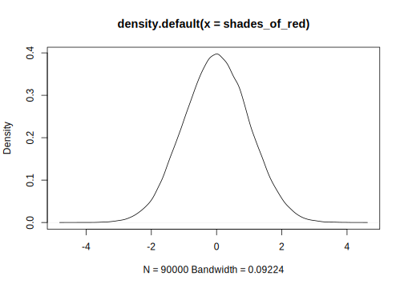
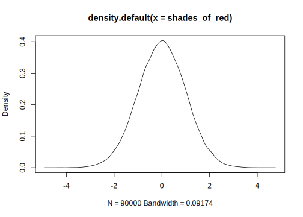
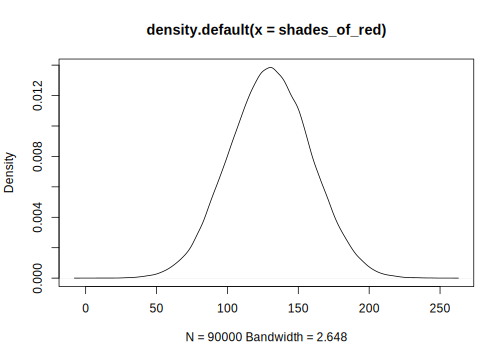
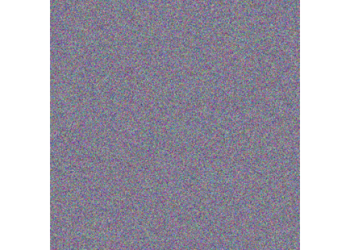

Chapter 7 Image data
With the advent of broadband internet and efforts in digitizing analogue archives a large part of the world’s available data is stored in the form of images (and moving images). Subsequent advances in computer vision (machine learning techniques focused on images and videos) have made usage of images for economic and social science purposes accessible to non-computer science researchers. Examples of how image data is used in economic research involve the quantification of urban appearance (based on the analysis of street-level images in cities, Naik, Raskar, and Hidalgo (2016)), the digitization of old text documents via optical character recognition (Cesarini et al. (2016)), and the measurement of economic development/wealth with nighttime light-intensity based on satellite image data (Hodler and Raschky (2014)). In the following subsections, you will first explore the most common image formats, and how the data behind digital images is structured and stored.
7.1 Image data structure and storage
There are two important variants of how digital images are stored: raster images (for example, jpg files), and vector-based images (for example, eps files). In terms of data structure, the two formats differ quite substantially:
The data structure behind raster images basically defines an image as a matrix of pixels, as well as the color of each pixel. Thereby, screen colors are combinations of the three base colors red, green, blue (RGB). Technically speaking, a raster image thus consists of an array of three matrices with the same dimension (one for each base color). The values of each array element are then indicating the intensity of each base color for the corresponding pixel. For example, a black pixel would be indicated as (0,0,0). Raster images play a major role in essentially all modern computer vision applications related to social science/economic research. Photos, videos, satellite imagery, and scans of old documents all stored as raster images.
Vector images are essentially text files that store the coordinates of points on a surface and how these dots are connected (or not) by lines. Some of the commonly used formats to store vector images are based on XML (for example SVG files). The most common encounter of vector image files in a data analytics/research context are typically storing map data. Streets, borders, rivers, etc. can be defined as polygons (consisting of individual lines/vectors).
Given the fundamental differences in how the data behind these two types of images is structured, practically handling such data in R differs quite substantially between the two formats with regard to the R packages used and the representation of the image object in RAM.
7.2 Raster images in R
This is meant to showcase some of the most frequent tasks related to images in R.
# Load two common packages
library(raster) ## Loading required package: sp7.2.1 Basic data structure
Recall that raster images are stored as arrays (\(X\times Y \times Z\)). \(X\) and \(Y\) define the number of pixels in each column and row (width and height) of the image and \(Z\) the number of layers. Greyscale images usually have only one layer, whereas most colored images have 3 layers (in the case of RGB images).
To get a better feeling for the corresponding data structure in R, we start with generating RGB-images step-by-step in R. First we generate three matrices (one for each base color), arrange these matrices in an array, and then save the plots to disk.
7.2.1.1 Example 1: Generating a red image (RGB code: 255,0,0)
# Step 1: Define the width and height of the image
width = 300;
height = 300
# Step 2: Define the number of layers (RGB = 3)
layers = 3
# Step 3: Generate three matrices corresponding to Red, Green, and Blue values
red = matrix(255, nrow = height, ncol = width)
green = matrix(0, nrow = height, ncol = width)
blue = matrix(0, nrow = height, ncol = width)
# Step 4: Generate an array by combining the three matrices
image.array = array(c(red, green, blue), dim = c(width, height, layers))
dim(image.array)## [1] 300 300 3# Step 5: Create RasterBrick
image = brick(image.array)
print(image)## class : RasterBrick
## dimensions : 300, 300, 90000, 3 (nrow, ncol, ncell, nlayers)
## resolution : 0.003333, 0.003333 (x, y)
## extent : 0, 1, 0, 1 (xmin, xmax, ymin, ymax)
## crs : NA
## source : memory
## names : layer.1, layer.2, layer.3
## min values : 255, 0, 0
## max values : 255, 0, 0# Step 6: Plot RGB
plotRGB(image)## Warning in .couldBeLonLat(x, warnings = warnings): CRS
## is NA. Assuming it is longitude/latitude# Step 7: (Optional) Save to disk
png(filename = "red.png", width = width, height = height, units = "px")
plotRGB(image)## Warning in .couldBeLonLat(x, warnings = warnings): CRS
## is NA. Assuming it is longitude/latitudedev.off()## pdf
## 27.2.1.2 Example 2: Generating a green image (RGB code: 0, 255, 0)
# Step 1: Define the width and height of the image
width = 300;
height = 300
# Step 2: Define the number of layers (RGB = 3)
layers = 3
# Step 3: Generate three matrices corresponding to Red, Green, and Blue values
red = matrix(0, nrow = height, ncol = width)
green = matrix(255, nrow = height, ncol = width)
blue = matrix(0, nrow = height, ncol = width)
# Step 4: Generate an array by combining the three matrices
image.array = array(c(red, green, blue), dim = c(width, height, layers))
dim(image.array)## [1] 300 300 3# Step 5: Create RasterBrick
image = brick(image.array)
print(image)## class : RasterBrick
## dimensions : 300, 300, 90000, 3 (nrow, ncol, ncell, nlayers)
## resolution : 0.003333, 0.003333 (x, y)
## extent : 0, 1, 0, 1 (xmin, xmax, ymin, ymax)
## crs : NA
## source : memory
## names : layer.1, layer.2, layer.3
## min values : 0, 255, 0
## max values : 0, 255, 0# Step 6: Plot RGB
plotRGB(image)## Warning in .couldBeLonLat(x, warnings = warnings): CRS
## is NA. Assuming it is longitude/latitude# Step 7: (Optional) Save to disk
png(filename = "blue.png", width = width, height = height, units = "px")
plotRGB(image)## Warning in .couldBeLonLat(x, warnings = warnings): CRS
## is NA. Assuming it is longitude/latitudedev.off()## pdf
## 27.2.1.3 Example 3: Generating a blue image (RGB code: 0, 0, 255)
# Step 1: Define the width and height of the image
width = 300;
height = 300
# Step 2: Define the number of layers (RGB = 3)
layers = 3
# Step 3: Generate three matrices corresponding to Red, Green, and Blue values
red = matrix(0, nrow = height, ncol = width)
green = matrix(0, nrow = height, ncol = width)
blue = matrix(255, nrow = height, ncol = width)
# Step 4: Generate an array by combining the three matrices
image.array = array(c(red, green, blue), dim = c(width, height, layers))
dim(image.array)## [1] 300 300 3# Step 5: Create RasterBrick
image = brick(image.array)
print(image)## class : RasterBrick
## dimensions : 300, 300, 90000, 3 (nrow, ncol, ncell, nlayers)
## resolution : 0.003333, 0.003333 (x, y)
## extent : 0, 1, 0, 1 (xmin, xmax, ymin, ymax)
## crs : NA
## source : memory
## names : layer.1, layer.2, layer.3
## min values : 0, 0, 255
## max values : 0, 0, 255# Step 6: Plot RGB
plotRGB(image)## Warning in .couldBeLonLat(x, warnings = warnings): CRS
## is NA. Assuming it is longitude/latitude
# Step 7: (Optional) Save to disk
png(filename = "green.png", width = width, height = height, units = "px")
plotRGB(image)## Warning in .couldBeLonLat(x, warnings = warnings): CRS
## is NA. Assuming it is longitude/latitudedev.off()## pdf
## 27.2.1.4 Example 4: Generating a random RGB image
# Step 1: Define the width and height of the image
width = 300;
height = 300
# Step 2: Define the number of layers (RGB = 3)
layers = 3
# Step 3: Draw random color intensities from a standard-normal distribution
shades_of_red = rnorm(n = width*height, mean = 0, sd = 1)
shades_of_green = rnorm(n = width*height, mean = 0, sd = 1)
shades_of_blue = rnorm(n = width*height, mean = 0, sd = 1)The color intensity must be in the range 0 to 255, however, our values are standard normally distributed around 0:
plot(density(shades_of_red)) We first normalize them to a range of 0 to 1 using the formula: \(z_i = \frac{x_i - min(x)}{max(x)-min(x)}\) and subsequently multiply by 255:
# Step 4: Normalize to 0,255 range of values
shades_of_red = (shades_of_red - min(shades_of_red))/(max(shades_of_red)-min(shades_of_red))*255
shades_of_green = (shades_of_green - min(shades_of_green))/(max(shades_of_green)-min(shades_of_green))*255
shades_of_blue = (shades_of_blue - min(shades_of_blue))/(max(shades_of_blue)-min(shades_of_blue))*255
plot(density(shades_of_red))
# Step 5: Generate three matrices corresponding to Red, Green, and Blue values
red = matrix(shades_of_red, nrow = height, ncol = width)
green = matrix(shades_of_green, nrow = height, ncol = width)
blue = matrix(shades_of_blue, nrow = height, ncol = width)
# Step 6: Generate an array by combining the three matrices
image.array = array(c(red, green, blue), dim = c(width, height, layers))
dim(image.array)## [1] 300 300 3# Step 7: Create RasterBrick
image = brick(image.array)
print(image)## class : RasterBrick
## dimensions : 300, 300, 90000, 3 (nrow, ncol, ncell, nlayers)
## resolution : 0.003333, 0.003333 (x, y)
## extent : 0, 1, 0, 1 (xmin, xmax, ymin, ymax)
## crs : NA
## source : memory
## names : layer.1, layer.2, layer.3
## min values : 0, 0, 0
## max values : 255, 255, 255# Step 8: Plot RGB
plotRGB(image)## Warning in .couldBeLonLat(x, warnings = warnings): CRS
## is NA. Assuming it is longitude/latitude
From the examples above, you recognize that in order to generate/manipulate raster images in R, we basically generate/manipulate matrices/arrays (i.e., structures very common to any data analytics task in R). Several additional R packages come with pre-defined functions for more advanced image manipulations in R.
7.2.2 Advanced Image Manipulation using ImageMagick
# load package
library(magick)## Linking to ImageMagick 6.9.11.60
## Enabled features: fontconfig, freetype, fftw, heic, lcms, pango, webp, x11
## Disabled features: cairo, ghostscript, raw, rsvg## Using 12 threads# We can import images from the web
frink <- image_read("https://jeroen.github.io/images/frink.png")
print(frink)## # A tibble: 1 × 7
## format width height colorspace matte filesize density
## <chr> <int> <int> <chr> <lgl> <int> <chr>
## 1 PNG 220 445 sRGB TRUE 73494 72x72# Rotate
image_rotate(frink, 45)# Flip
image_flip(frink)
# Flop
image_flop(frink)
7.2.3 Working with OCR (Optical Character Recognition)
# For Optical Character Recognition
library(tesseract)
img <- image_read("https://s3.amazonaws.com/libapps/accounts/30502/images/new_york_times.png")
print(img)## # A tibble: 1 × 7
## format width height colorspace matte filesize density
## <chr> <int> <int> <chr> <lgl> <int> <chr>
## 1 PNG 806 550 sRGB FALSE 714189 38x38
headline <-
image_crop(image = img, geometry = '806x180')
headline
# Extract text
cat(image_ocr(headline))## The New Work Times. ==S=
##
## TITANIC SINKS FOUR HOURS AFTER HITTING ICEBERG;
## 866 RESCUED BY CARPATHIA, PROBABLY 1250 PERISH;
## ISMAY SAFE, MRS. ASTOR MAYBE, NOTED NAMES MISSING7.3 Vector Images in R
# Common Packages for Vector Files
library(magick)
# Download and read svg image from url
URL <- "https://upload.wikimedia.org/wikipedia/commons/1/1b/R_logo.svg"
Rlogo_xml <- read_xml(URL)
# Data structure
Rlogo_xml ## {xml_document}
## <svg preserveAspectRatio="xMidYMid" width="724" height="561" viewBox="0 0 724 561" xmlns="http://www.w3.org/2000/svg" xmlns:xlink="http://www.w3.org/1999/xlink">
## [1] <defs>\n <linearGradient id="gradientFill-1" x1 ...
## [2] <path d="M361.453,485.937 C162.329,485.937 0.906 ...
## [3] <path d="M550.000,377.000 C550.000,377.000 571.8 ...xml_structure(Rlogo_xml)## <svg [preserveAspectRatio, width, height, viewBox, xmlns, xmlns:xlink]>
## <defs>
## <linearGradient [id, x1, x2, y1, y2, gradientUnits, spreadMethod]>
## <stop [offset, stop-color, stop-opacity]>
## <stop [offset, stop-color, stop-opacity]>
## <linearGradient [id, x1, x2, y1, y2, gradientUnits, spreadMethod]>
## <stop [offset, stop-color, stop-opacity]>
## <stop [offset, stop-color, stop-opacity]>
## <path [d, fill, fill-rule]>
## <path [d, fill, fill-rule]># Raw data
Rlogo_text <- as.character(Rlogo_xml)
# Plot
svg_img = image_read_svg(Rlogo_text)
image_info(svg_img)## # A tibble: 1 × 7
## format width height colorspace matte filesize density
## <chr> <int> <int> <chr> <lgl> <int> <chr>
## 1 PNG 724 561 sRGB TRUE 0 72x72svg_img